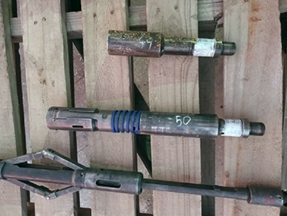
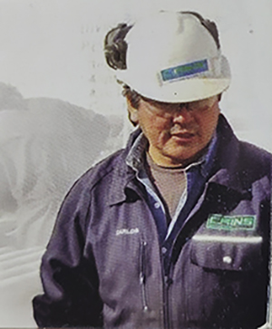

ENSAYOS NO DESTRUCTIVOS:
NUESTROS SERVICIOS
LÍQUIDOS PENETRANTES (LP)

Este servicio está diseñado para detectar defectos superficiales en materiales no porosos, como metales y cerámicas, utilizados en la industria petrolera. El proceso consiste en aplicar un líquido de alta capilaridad que penetra en grietas, poros o discontinuidades. Posteriormente, un revelador permite visualizar estos defectos, garantizando la seguridad y calidad de los componentes inspeccionados.
PARTÍCULAS MAGNETIZABLES (PM)
Tiene como propósito la detección de discontinuidades superficiales y subsuperficiales en materiales ferromagnéticos. El proceso consiste en magnetizar la pieza y aplicar partículas finas magnéticas que se acumulan en áreas con defectos, como grietas o fisuras. Este método garantiza una inspección precisa y segura de componentes críticos en la industria petrolera, asegurando su integridad y durabilidad.
MEDICIÓN DE ESPESORES POR ULTRASONIDO (ME)
Es una una técnica precisa para evaluar el espesor de materiales sin dañarlos. Mediante ondas ultrasónicas, se detectan corrosiones, desgastes o variaciones en componentes metálicos y no metálicos. Este método es fundamental en la industria petrolera para asegurar la integridad de tuberías, tanques y estructuras, garantizando su seguridad y prolongando su vida útil.
PRUEBAS HIDRÁULICAS (PH)
Se verifican la resistencia y la estanqueidad de equipos sometidos a presión, como tuberías, tanques y recipientes. Mediante la aplicación de agua a alta presión, se detectan posibles fugas o fallas estructurales, garantizando que los componentes cumplan con los estándares de seguridad requeridos en la industria petrolera, prolongando así su vida útil y asegurando un rendimiento confiable.
OTROS SERVICIOS ESPECIALES
MANDRILES PARA RECUPERACION SECUNDARIA
Es una técnica que optimiza la producción petrolera al permitir el acceso y la intervención en pozos, mejorando la eficiencia en la extracción de hidrocarburos.
INSPECCIONES VISUALES
Se detectan defectos superficiales en equipos y estructuras de la industria petrolera. Este método rápido y eficiente asegura la integridad y el correcto funcionamiento de los componentes.